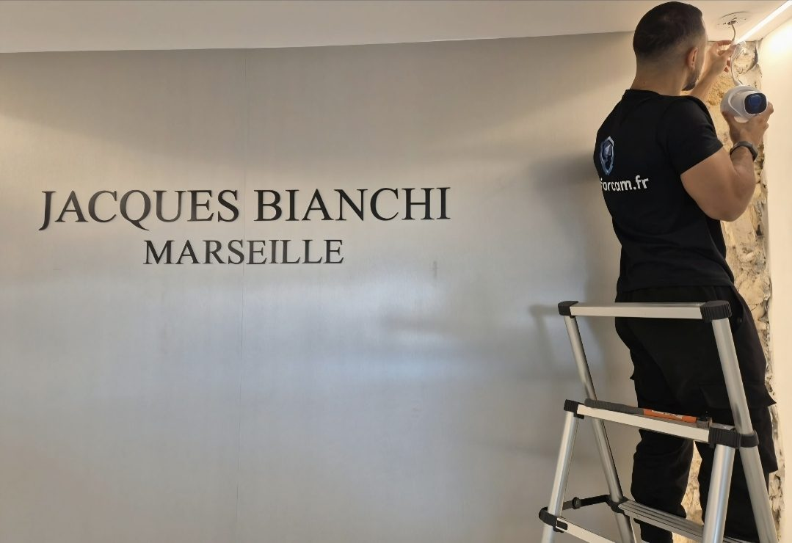

Les zones à surveiller dans un commerce
L’entrée
Pour voir qui entre et qui sort, de jour comme de nuit. C’est souvent la première caméra installée.
La caisse
Pour vérifier un incident ou un litige. La caméra doit viser la caisse plutôt que la personne qui y travaille.
La zone de vente
Pour couvrir les rayons, les vitrines et les angles morts où les vols sont plus faciles.
La réserve
Zone réservée au personnel : elle peut être filmée sans autorisation préfectorale.
L’extérieur
Rideau, vitrine, porte arrière ou terrasse, pour garder une trace en cas d’effraction.
La vision sur place
Un écran derrière le comptoir permet de garder un œil sur la boutique en servant les clients.

Une référence à Marseille : la boutique Jacques Bianchi
Nous avons équipé la boutique Jacques Bianchi, à Marseille, de quatre caméras filaires reliées à un enregistreur NVR. Les caméras dômes ont été placées pour couvrir les angles de la boutique, avec un câblage discret, y compris sur un mur en pierre. Les photos de ce chantier sont visibles dans la rubrique réalisations de notre site.
Les règles à respecter dans un commerce
Selon la CNIL, filmer les zones ouvertes au public (entrée, zone de vente, caisse) nécessite une autorisation du préfet, et des panneaux doivent informer les clients. Les images ne doivent en principe pas être conservées plus d’un mois. Les caméras sont interdites dans les cabines d’essayage et les toilettes, et ne doivent pas servir à surveiller en permanence le travail des salariés. Ces obligations sont souvent méconnues des commerçants. Vous trouverez plus de détails sur notre page consacrée à la vidéosurveillance à Marseille.
Un accompagnement à la mise en conformité, inclus
Nous réalisons l’installation et vous guidons dans les démarches :
- Étude des zones filmées : nous plaçons les caméras de façon à protéger vos biens, sans filmer les zones interdites.
- Masquage des zones interdites : la voie publique et les zones privées voisines sont masquées dans les réglages des caméras.
- Panneaux d’information : nous fournissons et posons les panneaux obligatoires destinés à informer vos clients.
- Dossier d’autorisation préfectorale : nous vous aidons à préparer le dossier (formulaire Cerfa, plan des caméras, descriptif technique) à déposer en préfecture.
- Réglages conformes : durée de conservation des images réglée selon les règles (un mois maximum en général), accès aux images protégé par mot de passe.
- Salariés : nous vous indiquons les informations à leur communiquer.
La demande d’autorisation est déposée au nom de l’exploitant de l’établissement. ConforCam vous accompagne dans sa préparation.
Pas d’abonnement : jusqu’à 780 € HT économisés par an
Avec une télésurveillance classique, un commerce paie souvent plus de 60 € HT par mois, tant que dure le contrat. Chez ConforCam, vous payez l’installation et le matériel une fois, puis vos caméras sont à vous. Comparaison indicative basée sur les tarifs publics d’offres de télésurveillance professionnelles en 2026.
Contrat de maintenance
Notre accompagnement se poursuit après l’installation. Dans le cadre du contrat de maintenance, nous intervenons une fois par an : nettoyage des caméras, vérification des enregistrements, tests de l’alarme, mises à jour et contrôle de l’espace de stockage. En cas de problème, vous disposez d’un interlocuteur qui connaît votre installation. Ce contrat est facultatif : 39 € par mois, sans engagement.
Nos conseils par type de commerce
- Restaurants : caisse, salle, entrée et accès de service.
- Bars et cafés : comptoir, terrasse et fermeture tardive.
- Épiceries et supérettes : rayons, caisse et réserve.
- Bijouteries : vitrines, comptoir et accès.
- Magasins de vêtements : rayons et sorties, jamais les cabines.
- Salons de coiffure : entrée et caisse.
- Salles de sport : accueil, accès et espaces communs.
- Bureaux et entreprises : accès, locaux techniques et alarme.
Pour choisir le bon modèle, lisez aussi notre article sur la caméra dôme pour commerce.
Pourquoi les commerçants choisissent ConforCam
- Sans abonnement : vous achetez le matériel une fois, il vous appartient.
- Tarif fixé avant l’intervention, après une étude gratuite sur place.
- Intervention sous 24 h à Marseille et en région PACA.
- Matériel garanti 2 ans et assistance après l’installation.
- Accompagnement à la mise en conformité : panneaux, masquage et aide au dossier préfectoral.
- Une note de 5,0 sur Google, attribuée par nos clients.
Zone d’intervention
ConforCam intervient dans tout Marseille, du 1er au 16e arrondissement (13001 à 13016), et selon les projets à Aix-en-Provence, Aubagne, Allauch, Plan-de-Cuques, Cassis, La Ciotat et dans les communes voisines des Bouches-du-Rhône. L’étude sur place et le devis sont gratuits.
Nos autres pages
Questions fréquentes
Faut-il une autorisation pour filmer mon commerce ?
Pour les zones ouvertes au public (entrée, zone de vente, caisse), la CNIL indique qu’une autorisation préfectorale est nécessaire. Les zones réservées au personnel, comme la réserve, n’en ont pas besoin.
Pouvez-vous m’aider pour l’autorisation préfectorale ?
Oui. Nous préparons avec vous le dossier à déposer en préfecture (formulaire, plan des caméras, descriptif technique), posons les panneaux d’information et réglons les caméras selon les règles. La demande est déposée au nom de l’exploitant.
Puis-je filmer mes employés ?
Les caméras peuvent filmer la caisse pour vérifier un incident, mais elles ne doivent pas servir à surveiller en permanence le travail des salariés. Les représentants du personnel doivent être informés.
Combien de caméras faut-il pour une boutique ?
Cela dépend de la surface, du nombre d’accès et des angles morts. Nous le déterminons pendant l’étude sur place, gratuite.
Puis-je voir mon commerce depuis chez moi ?
Oui, l’enregistreur peut être configuré pour une consultation depuis votre téléphone, sans abonnement, lorsque le matériel le permet.
Intervenez-vous dans le centre-ville de Marseille ?
Oui, dans tous les arrondissements de Marseille et dans les communes voisines.
Obtenir un devis gratuit
Vous avez un commerce à Marseille ? Nous venons voir les lieux gratuitement et vous proposons une installation au tarif fixé, sans abonnement.
Être rappelé gratuitement Appeler le 07 70 47 02 18Pour le détail des règles, consultez notre guide « Caméras dans un commerce : ce que dit la CNIL ».